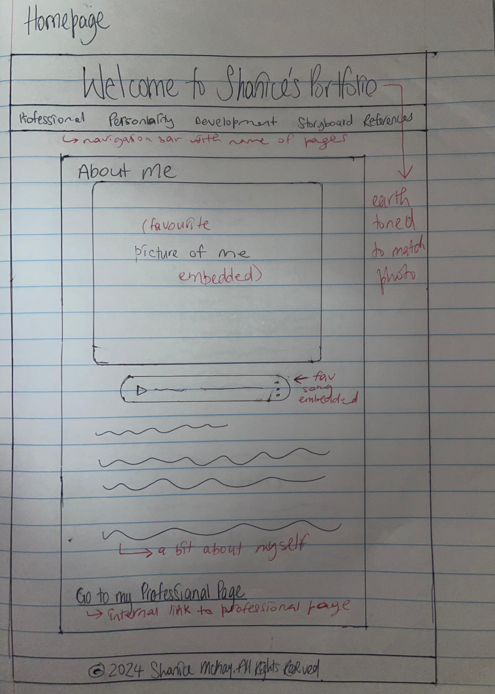
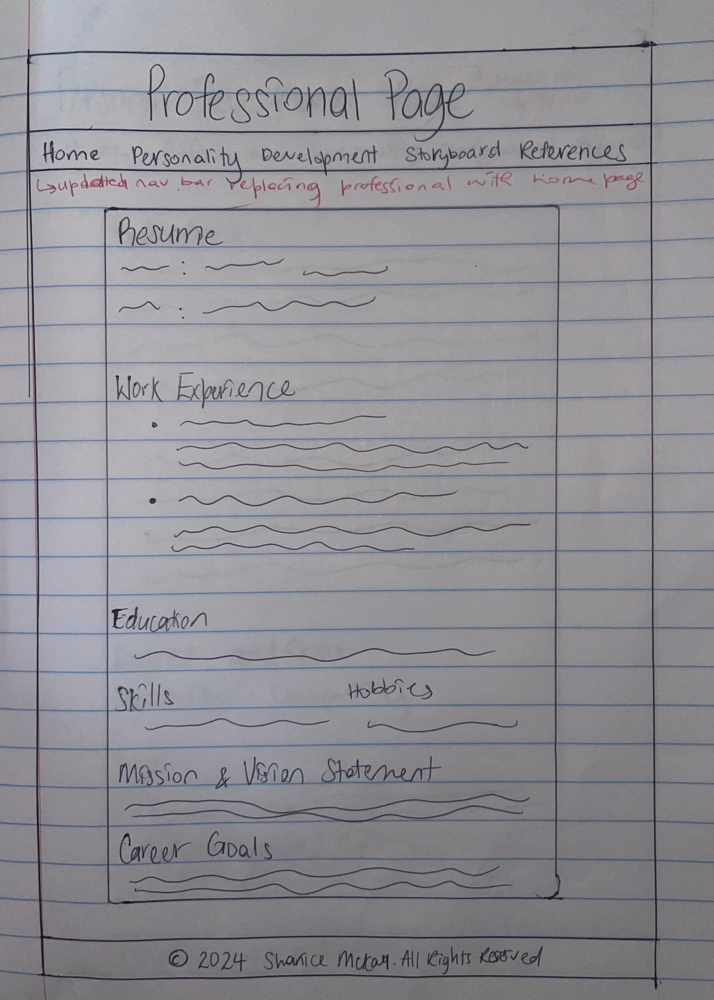
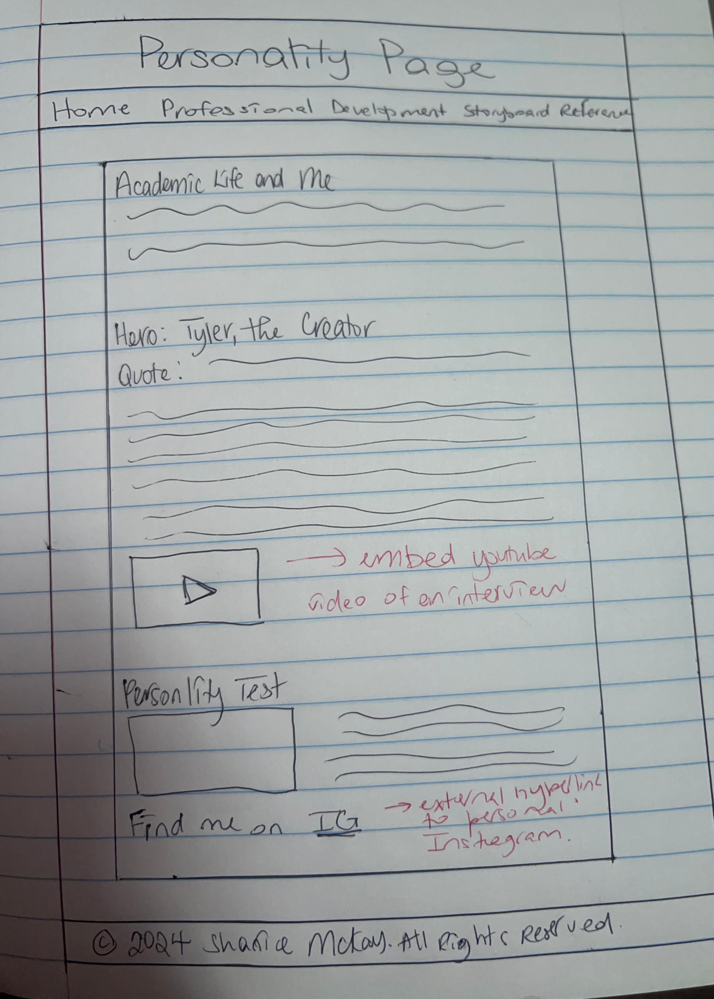
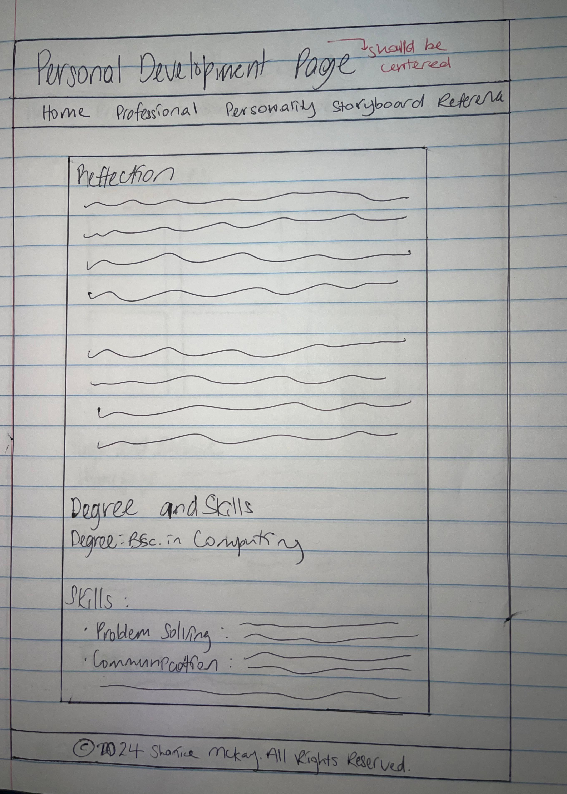
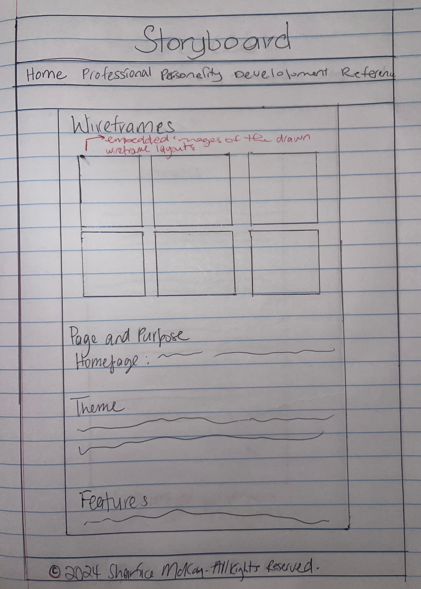
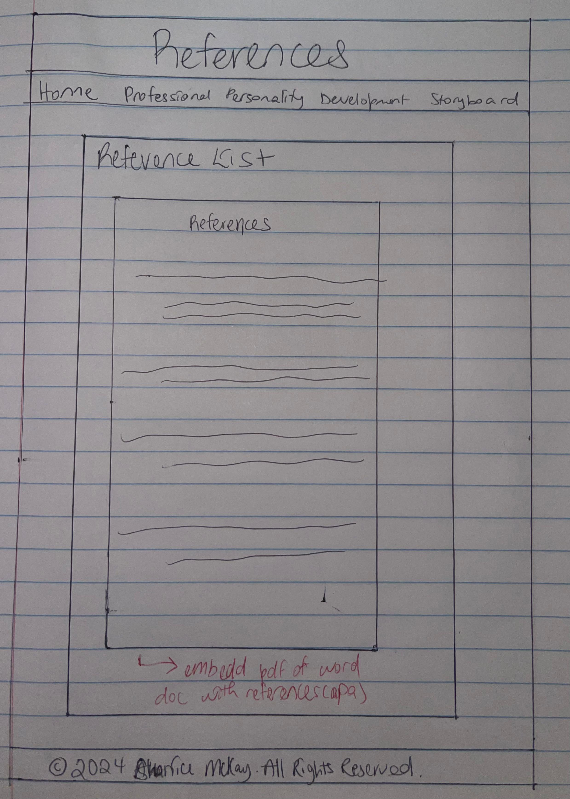

Wireframe Layouts






Web Pages and Purpose
- Home Page: It's the first touchpoint to introduce myself to the users with a picture of myself, my favourite song and a bit about me.
- Professional Page: Showcases my resume, vision and mission and career goals.
- Personality Page: Highlights a bit about how my life impacts my academic life, who my hero is and why as well as my personality test results.
- Development Page: This page gives more context on my personal experiences, journey for self improvement and degree.
- Storyboard Page: Details the wireframe layouts, purpose and feautures of the website.
- Reference Page: Lists all the sources I used to create the webite.
Website Theme
The theme of this website is based on earth tones (green, brown, and cream) to create a natural and welcoming aesthetic inspired by the photo of myself on the home page. The layout is clean and calming.
Website Features
- Navigation bar for easy access to all pages.
- Clickable images and links for interactivity.
- Embedded audio and video elements to showcase creativity.
- Responsive layout for usability on multiple devices.
Free Hosting Link
The website is hosted at: https://shanicemckay.github.io/portfolio